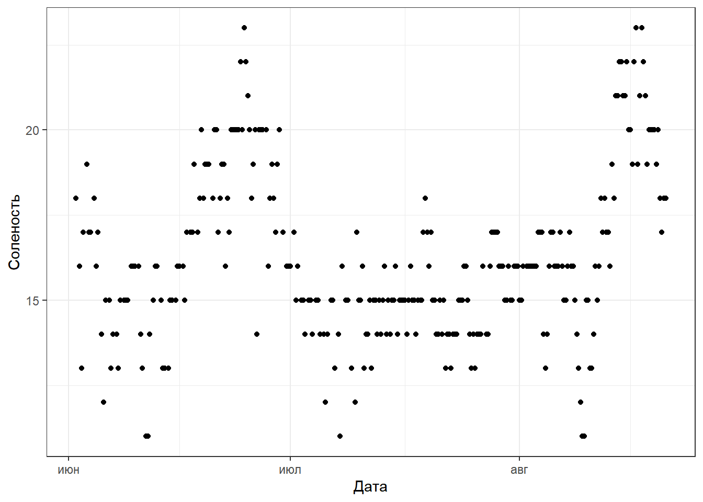
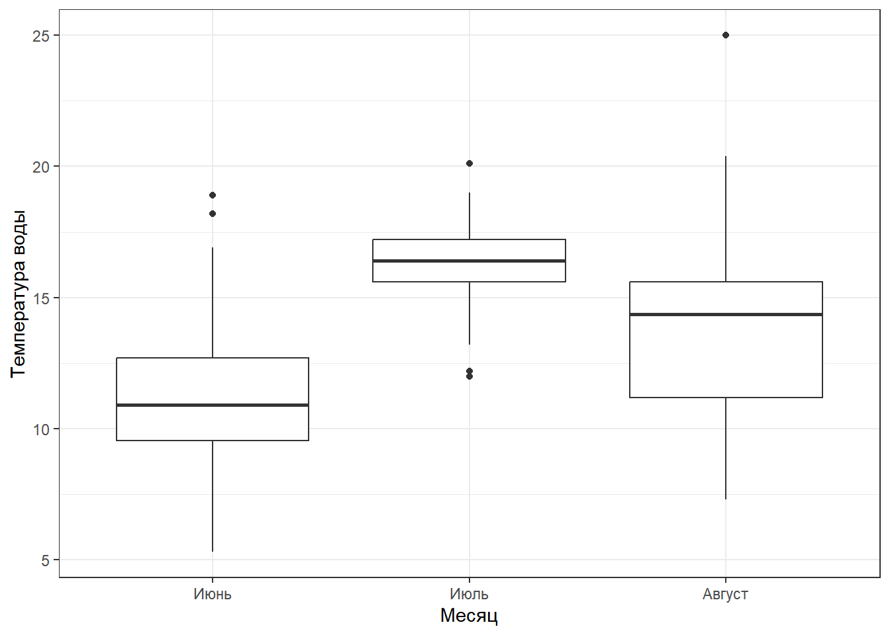
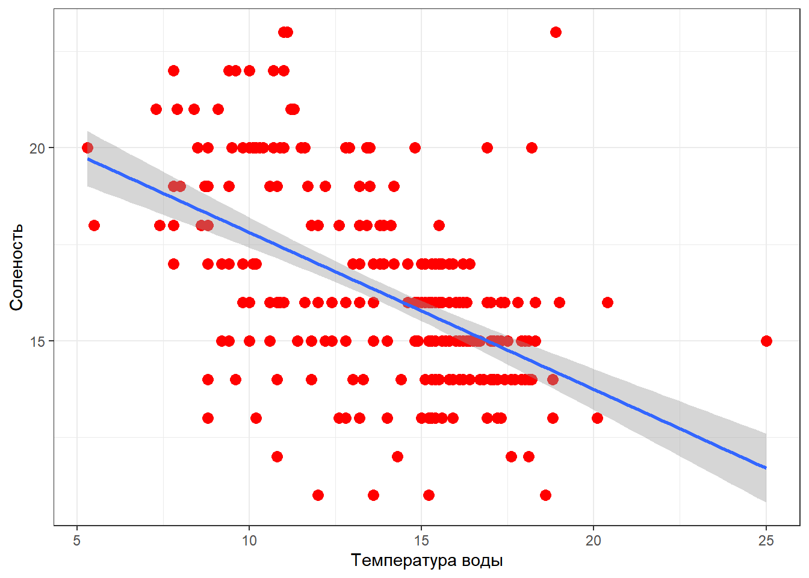
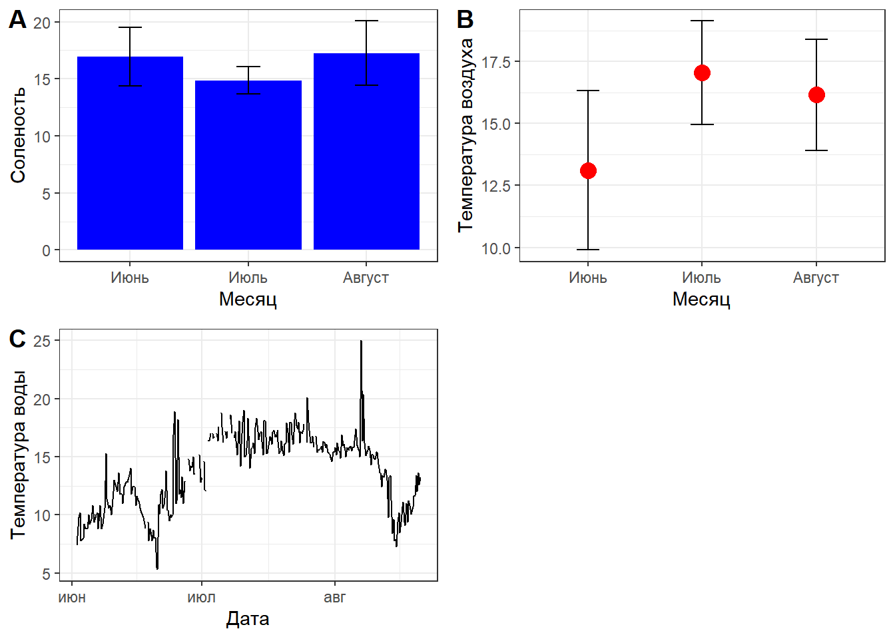

Идеальная ситуация - это когда вы будете работать со своим собственным компьютером (ноутбук или стационарная машина). Это понадобится для выполнения домашних заданий, да и вообще, так удобнее. Если у вас нет своего собственного компьютера, то вы сможете использовать мощности компьютерного класса ЭБЦ “Крестовский остров”.
До начала занятий вам понадобится установить две программы: R и RStudio. Ниже даны инструкции как это сделать.
Дополнительно: Некоторые пособия (на английском языке) вы найдете на страничке “Полезности” нашего сайта.
Внимание! Приведенные ниже видео являются собственностью СПбГУ. Огромная просьба НЕ распространять эти материалы. Они открыты только для вашего персонального пользования.
ggplot2Используя файл с данными по гидрологическим и метеорологическим наблюдениям напишите код, который приведет к появлению следующих визуализаций. При этом надо стремиться к тому, чтобы ваши рисунки были макимально похожи на те, что приведены в задании.
Переменные в данных
Date_Time Дата и время
Month Месяц
Air_T Температура воздуха
S Соленость
Wind Направление ветра
Wave Волнение моря в баллах
Water_T Температура воды
Скачайте и поместите в папку “data” вот эти данные.
Создайте новый скрипт.
Вставьте в этот скрипт вот эти строчки кода (при необходимости загрузите те пакеты, которые у вас еще не поставлены)
library(readxl)
library(ggplot2)
library(cowplot)
hydr <- read_excel("data/hydrology_2022.xls", na = "NA")
hydr$Date <- as.POSIXct(hydr$Date_Time, format = "%d.%m.%Y %H:%M") # Этот код переводит даты в формат, понятный для R.
hydr$Month <- factor(hydr$Month, levels = c("June", "July", "August")) # Этот код задает последовательность месяцев, иначе месяцы будут упорядочены по алфавиту
hydr$Month <- factor(hydr$Month, labels = c("Июнь", "Июль", "Август")) # Этот код позволяет задать русские обозначения для месяцев, которые в датасете закодированы на латинице.


Это все один рисунок. На панелях A и B приведены средние значения, а “усами” отложены стандартные отклонения. На панели C приведены исходные значения.
